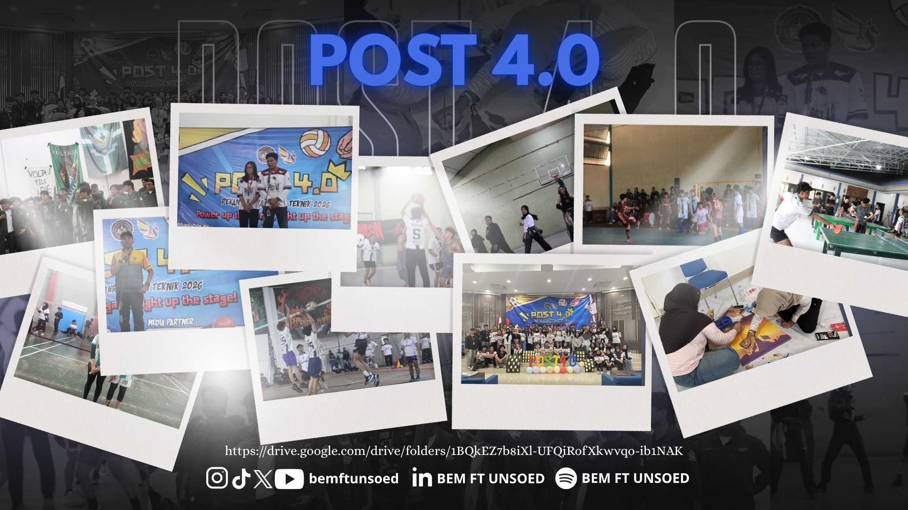
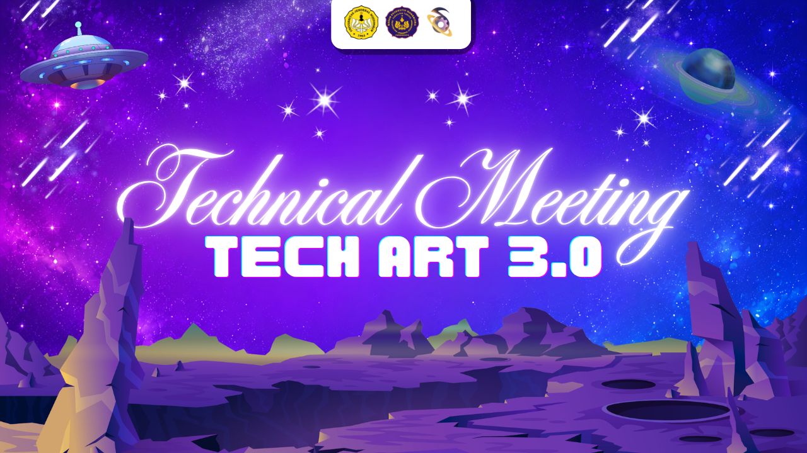

Ruang untukberlaga & berkarya
Kementerian Minat dan Bakat BEM FT Unsoed — Kabinet Sagara Cakrawala.
Siapa kami
Wadah pengembangan prestasi mahasiswa Fakultas Teknik di bidang olahraga, dan Seni.
Kementerian Minat dan Bakat BEM FT Unsoed hadir untuk mewujudkan optimalisasi aktivitas mahasiswa Teknik berdasarkan potensi minat dan bakat yang berkembang di lingkungan fakultas — dari lapangan olahraga hingga panggung seni.
Kami merangkul seluruh elemen, UKM, dan komunitas seni-olahraga di Fakultas Teknik, membina delegasi lomba, serta menjadi ruang apresiasi bagi mahasiswa yang berprestasi di bidang non-akademik.
Profil Kementerian
.JPG) CO
CO.JPG) MR
MR.JPG) SN
SN.JPG) LA
LA.JPG) KP
KP.JPG) ZF
ZF.JPG) RA
RA.JPG) AL
AL.JPG) HJ
HJ.JPG) LK
LKGaleri
Cuplikan kegiatan Kementerian Minat dan Bakat.




Kementerian Minat dan Bakat berperan sebagai ruang yang terbuka dan inovatif bagi seluruh Keluarga Besar Mahasiswa Fakultas Teknik. Kementerian ini mendorong setiap individu untuk menggali, mengasah, dan mengoptimalkan potensi di bidang olahraga, seni, kreativitas, dan inovasi. Melalui arah kerja yang lebih fokus dan strategi yang terstruktur, kementerian ini mendukung berkembangnya beragam potensi mahasiswa secara maksimal.
Membuka peluang bagi para KBMFT untuk mewakili, bergabung, dan berpartisipasi dalam berbagai kegiatan yang ada.
Mendorong partisipasi dalam perlombaan di tingkat regional, nasional, dan internasional, dengan pendataan berkala guna mendapatkan setiap potensi yang sesuai.
Menyelenggarakan program kerja yang mendukung KBMFT untuk menyalurkan potensi yang mereka miliki.
Mengembangkan program serta agenda kerja yang tidak hanya berfokus pada hasil akhir (prestasi), tetapi juga pada proses pengembangan karakter dan semangat kolaboratif.
Program Kerja & Agenda Kerja
Ketuk untuk membaca penjelasan lengkap tiap program dan agenda kerja.
POST 4.0 ini berbentuk kompetisi olahraga dan seni antar jurusan yang ada di Fakultas Teknik. POST 4.0 bertujuan mewadahi berbagai minat dan bakat dari KBMFT yang nantinya bisa mewakili Fakultas Teknik pada perlombaan di jenjang yang lebih tinggi dan tentunya sebagai ajang silaturahmi antar jurusan.
TechArt atau Pentas Kreasi ini ditujukan untuk mahasiswa baru Fakultas Teknik Unsoed tahun 2026. TechArt 3.0 menjadi ajang bagi mahasiswa baru untuk membangun solidaritas antar angkatan dari setiap jurusan yang ada di Fakultas Teknik, dalam rangka mewujudkan kreativitas mahasiswa baru yang berbentuk kompetisi drama musikal antar jurusan.
Delegasi Lomba bertujuan memfasilitasi pengiriman delegasi KBMFT Unsoed ke berbagai perlombaan. Agenda kerja ini berperan sebagai sarana tindak lanjut dari pengembangan minat, bakat, dan menanamkan jiwa kompetitif positif pada mahasiswa dalam bidang kesenian serta keolahragaan.
Komunitas ini didirikan sebagai wadah seluruh KBMFT dalam melatih, menyalurkan, dan menjadi ajang unjuk minat dan bakat mereka dalam bidang olahraga dan seni, sekaligus sebagai wadah mempersiapkan para delegasi untuk perlombaan-perlombaan yang ada.
Kegiatan music corner santai yang menjadi wadah ekspresi seni serta relaksasi bagi KBMFT melalui penampilan musik akustik yang dikemas dalam suasana chill dan interaktif. Agenda ini mewadahi minat dan bakat KBMFT di bidang seni musik dengan menyediakan ruang hiburan positif di tengah kesibukan akademik, mempererat hubungan antar mahasiswa lintas jurusan, serta menumbuhkan apresiasi terhadap potensi KBMFT.
Platform yang tersedia di sosial media untuk menginformasikan berbagai perlombaan. Techno Talent Hub hadir melalui saluran WhatsApp yang terdapat pada linktree bio Instagram Kementerian Minat dan Bakat, dapat diakses oleh seluruh KBMFT, dalam rangka memberikan berbagai informasi perlombaan baik lingkup universitas maupun eksternal.
Kegiatan yang mempertemukan divisi Minat dan Bakat masing-masing himpunan. Kegiatan ini diadakan untuk mendiskusikan serta memberikan informasi terkait setiap program dan agenda kerja dari Kementerian Minat dan Bakat dan Kementerian Sinema, agar saling mendukung dan dapat direalisasikan oleh seluruh KBMFT — meningkatkan kinerja, serta melahirkan ide dan inovasi guna pengembangan minat dan bakat serta sinergi KBMFT.
Seluruh bentuk desain grafis yang ada di Kementerian Minat dan Bakat — seperti feeds Instagram @mikatftunsoed, logo agenda kerja, dan pamflet agenda kerja. DKV merupakan non program/agenda kerja, namun menjadi upaya membangun branding Kementerian Minat dan Bakat BEM FT Unsoed 2026.
Alur Peminjaman Inventaris
4 langkah mudah meminjam alat/inventaris Kementerian Minat dan Bakat.
Peminjaman maksimal dilakukan H-1 dari waktu peminjaman yang direncanakan.
Setelah mengisi formulir, wajib melakukan konfirmasi melalui CP yang tertera pada formulir.
Alat wajib dikembalikan tepat waktu sesuai tanggal yang dicantumkan pada formulir.
Jika ingin memperpanjang peminjaman, wajib mengisi formulir dan konfirmasi kembali.
Hubungi narahubung Kementerian Minat dan Bakat untuk konfirmasi peminjaman.
Alur Pengajuan Delegasi Lomba
Pilih kategori lomba yang kamu ikuti, lalu ikuti langkah-langkahnya. Ketuk tombol template untuk langsung membuka dokumennya.
Pakta Integritas adalah dokumen pernyataan komitmen delegasi yang wajib diisi dan dilampirkan bersama proposal pengajuan, sesuai kategori lomba (berbayar/tidak berbayar) yang diikuti.
Setelah proposal dan Pakta Integritas dikirim ke CP yang tertera, proses tinjauan akan lebih cepat jika seluruh dokumen sudah lengkap dan sesuai ketentuan. Pantau terus WhatsApp untuk kemungkinan revisi dari PJ lomba.
Keduanya menggunakan alur pengajuan yang serupa, namun template Pakta Integritas yang digunakan berbeda sesuai kategori lomba yang diikuti, pastikan mengunduh template yang sesuai.